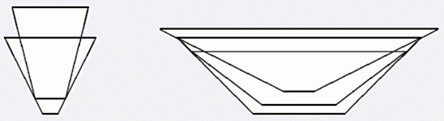

小H有 $n$ 个碗需要放进橱柜，她希望将他们叠起来放置。你知道每个碗都是规则的圆柱体，并且都是上宽下窄，你已经测量出了每个碗的两个半径及高，请你帮小H找出一种叠放顺序，使得叠放出来的碗堆的高度尽量小，比如：

第一行一个整数 $n$，表示碗的数目。以下 $n$ 行，每行三个整数 $h$，$r_1$，$r_2$。分别表示碗高及两个半径。
仅一个数，表示最小的高度。答案四舍五入取整。
3 50 30 80 35 25 70 40 10 90
55
【数据范围】
100% 数据满足 $n \le 9$。所有输入的数绝对值不超过 $1000$。
 Comet OJ
Comet OJ